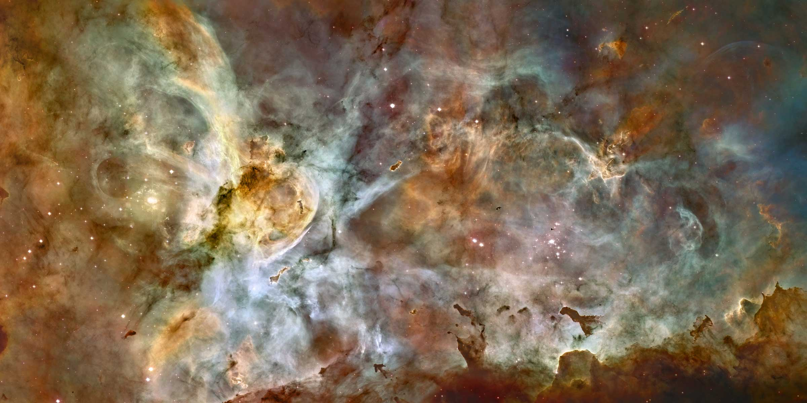
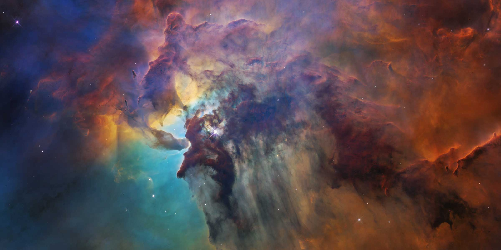

Enjoy our Universe!
ANTENNAE GALAXIES
This merging pair of galaxies is one of the nearest and youngest examples of colliding galaxies
ARP 273
The interacting galaxy pair Arp 273 features the rose-shaped disk of the larger galaxy, which uis distorted by gravitational pull of the companion glaxy below it
CARINA NEBULA
This is a 50-light-year-wide view of the central region of the Carina Nebula, where a maelstrom of star birth and death is occuring. The mosaic is stitched together from 48 individual Hubble images. The future WFIRST mission could cover twice this area in one pointing, giving a more complete understanding of what is happening in and around the nebula
LAGOON NEBULA
The Lagoon Nebula, a vast stellar nursery located 4,000 light-years away, provides an extraordinary tapestry of star birth
MONKEY HEAD NEBULA
This Hubble mosaicunveils a rolling region of star birth in small portion of the Monkey Head Nebula
V838 MONOCEROTIS
Hubble viewed an expanding halo of light, called a light echo, around the distant star V838 Monocerotis. The telescope's longevity allowed observations over many years, showing how the light echo travelled through space and time.